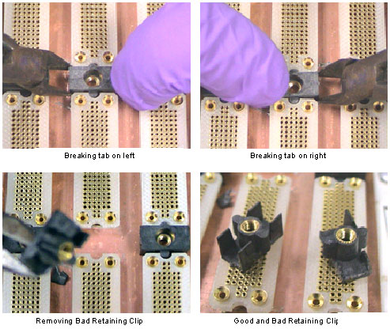
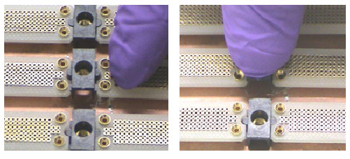

Operating Documentation
Direction 5181178-800, Rev# 16
BrightSpeed Select Service Methods Gen
Module Version 1.0, Version Date 2/16/07
Operating Documentation |
| Required Persons | Preliminary Reqs | Procedure | Finalization |
|---|---|---|---|
| 1 |
This procedure is used as a result of some other issue related to the DDIF. The failure of the retainer clip can be confirmed only by visual observation. The steps to replace a failed Dust Shield Retainer Clip are:
FE has already removed covers and is inspecting DDIF.
Loose or vibrating Dust shield has been identified.
Remove flexes and dust shields.
Remove and replace failed retainer clip.
| Last Revised: | August 7, 2003 |
| Item | Qty | Effectivity | Part# | Manufacturer | |
|---|---|---|---|---|---|
| DAS/Detector Service Kit (Shipped with system) | 1 | - | - | - | |
| ESD kit | 1 | - | - | - | |
| Side Cutters | 1 | - | - | - | |
| Item | Qty | Effectivity | Part# | Manufacturer | |
|---|---|---|---|---|---|
| Retainer clip (Part of the “DAS/Detector Service Kit” shipped with the system | 1 | - | - | - | |
| ||||
| Electrocution hazard. | ||||
| High Voltage present. | ||||
| Use proper lockout/tagout procedures before replacing components. |
| ||||
| CRUSH HAZARD. | ||||
| UNEXPECTED GANTRY ROTATION CAN CAUSE SERIOUS INJURY. | ||||
| Never service the gantry with the axial drive enabled. |
| Condition | Reference | Effectivity |
|---|---|---|
DAS Air Plenum removal | - | - |
ESD Precautions | - | - |
This requires destroying the damaged Retainer Clip.
| ||||
| The replacement of this part must be performed with great care. Severe damage to the backplane BGA connector can result requiring DAS chassis replacement. | ||||
Failed retainer clip has been identified. Flex lead and Dust Shield have been removed.
Remove flex lead and dust shield from left and right sides of the failed retainer clip.
Position Gantry with failed retainer clip at the 2 O’clock position.
Lock the gantry in position, using the rotational lock.
Using small sharp side cutters, grip the right side of the damaged retainer clip. Squeeze the clip until it cracks and fragments into smaller pieces.
Illustration 1: Removing Retaining Clip from DDIF

Perform the same process as in the previous step on the left side of the failed retainer clip. You must destroy the damaged retainer clip to remove it.
Remove from the backplane, all fragments of the destroyed retainer clip.
Observe the new retainer clip has snap lock features on two sides. These snap locks secure to the “A” and “B” backplane BGA connectors.
With your Nitrile Glove protected fingers, push the retainer clip into place. Make sure the new retainer clip is installed perpendicular to the backplane.
Illustration 2: Positioning and Seating new Retaining Clip

Assemble the DDIF, unlock the gantry.
Restore gantry power.
Allow DAS to warm up for 1 hour prior to Image Quality testing.
Perform Image Quality testing.